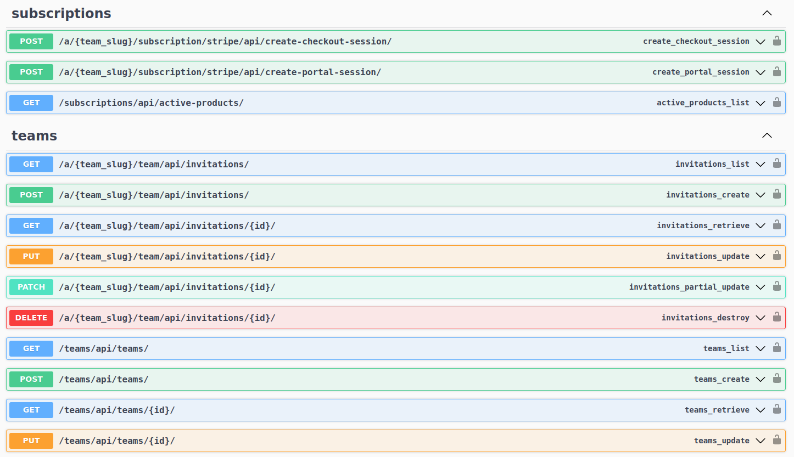
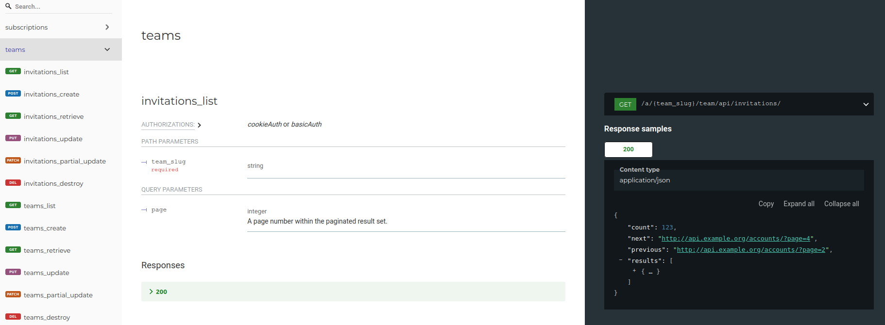

APIs#
Pegasus comes with a rich ecosystem of APIs that can used by your app’s front end as well as exposed to third-party developers.
APIs in Pegasus#
APIs in Pegasus consist of three pieces:
API endpoints, created with Django Rest Framework (DRF). These are the Django views that serve your APIs.
API schemas, created with drf-spectacular. These are automatically created by your APIs, and can be used for API documentation and client generation. They follow the OpenAPI 3 specification.
API clients, created by OpenAPI Generator. These can be used by developers to interact with your APIs. Pegasus ships with a TypeScript (JavaScript) client that is used in your app’s front end by the parts of the app that interact with the backend APIs (e.g. JavaScript charts, and the React/Vue demos).
This might sound like a lot of moving parts, but, critically, all the logic lives in the API endpoints themselves. The schemas are auto-generated by the endpoints, and the clients are auto-generated by the schemas. So you only have to maintain your APIs in a single place, and everything else is kept in sync with tooling.
Using the schemas and clients is optional. You can always interact with a Pegasus API by making the appropriate HTTP requests directly. However, using a client can greatly simplify the code you write and improve the development experience. Front end code in Pegasus that interacts with APIs uses it by default.
Additionally, getting API docs “for free” from the schemas can be a big win if you plan to make your project’s API third-party-developer-facing.
API Documentation#
By default, your Pegasus app ships with two built-in sets of API documentation available at the /api/schema/swagger-ui/ endpoint
(http://localhost:8000/api/schema/swagger-ui in development) and /api/schema/redoc/ endpoint
(http://localhost:8000/api/schema/redoc/ in development).
The API docs will look something like this:
Swagger API docs:

Redoc API docs:

API Clients#
As part of the front end, Pegasus ships with an API client that can be used to interact with your project’s APIs. This client is automatically generated from your APIs and should not be modified by hand.
You can find the source code of the API client(s) in the assets/javascript/api-client folder.
Using the API client#
There are several example usages of the API client in the Pegasus codebase. The steps, as seen in the employee app demo, are as follows:
Initialize the API client
import {Cookies} from "./app";
import {Configuration, PegasusApi} from "./api-client";
const apiConfig = new Configuration({
basePath: 'https://yourserver.com/', // or pass this in via {{server_url}} template variable
headers: {
'X-CSRFToken': Cookies.get('csrftoken'),
}
})
const client = new PegasusApi(apiConfig);
Call an API
client.employeesList().then((result) => {
// do something with the API result here
console.log('your employees are ', result.results);
});
Client method names#
The easiest way to find out the methods available in the API client is by looking at the source code
in assets/javascript/api-client/apis/<AppName>Api.ts.
Method names are determined by the operationId value for the API in the auto-generated schema.yaml file.
These identifiers are auto-generated, but can be overridden using DRF Spectacular’s extend_schema_view and extend_schema helper functions.
This can be done for an entire ViewSet as follows:
from drf_spectacular.utils import extend_schema_view, extend_schema
from rest_framework import viewsets
@extend_schema_view(
create=extend_schema(operation_id='employees_create'),
list=extend_schema(operation_id='employees_list'),
retrieve=extend_schema(operation_id='employees_retrieve'),
update=extend_schema(operation_id='employees_update'),
partial_update=extend_schema(operation_id='employees_partial_update'),
destroy=extend_schema(operation_id='employees_destroy'),
)
class EmployeeViewSet(viewsets.ModelViewSet):
# rest of viewset code here
The IDs in the Python code will be converted to camelCase in the JavaScript client.
Generating the OpenAPI3 schema.yml file#
In a new Pegasus installation, the OpenAPI3 schema.yml will be available at the /api/schema/ endpoint
(http://localhost:8000/api/schema/ in dev).
If you plan to use the schema.yml file in production, it is more efficient to create it once and serve it as a static file.
This can be done by running:
./manage.py spectacular --file static/api-schema.yml
Then you can reference the file by using {% static /api-schema.yml %} in a Django template.
Generating the API client#
Anytime you change your APIs you should create a new API client to keep things in sync. This can be done using the OpenAPI Generator project. The typescript-fetch client is the one used by Pegasus.
Running natively (requires Java)#
To generate your API client natively, first install the openapi-generator-cli (this library also requires java):
npm install @openapitools/openapi-generator-cli -g
Then run it as follows:
openapi-generator-cli generate -i http://localhost:8000/api/schema/ -g typescript-fetch -o ./assets/javascript/api-client/
The above assumes your Django server is running at http://localhost:8000, but you can replace that
value with any URL or file system reference to your schema.yml file.
Running in docker#
You can also generate your API client with docker to avoid having to install Java. There are a few additional steps for doing this.
Determine the public IP of your host machine on the local network. It will usually be something like
192.168.0.xxx. These instructions use the example of192.168.0.104.One way to find this on most systems is to run
hostname -I | awk '{print $1}'
Add this IP address to
ALLOWED_HOSTSin yoursettings.pyfile. Or setALLOWED_HOSTS = ["*"]You can confirm this is working by loading the IP in a browser (e.g. opening http://192.168.0.104). If you did it correctly your app should load.
Export this value as an environment variable, called
HOST_IP. E.g.export HOST_IP=192.168.0.104.Run
make api-client.
You should see the files in assets/javascript/api-client get updated.
Rebuilding your front end#
After re-creating the API client, you’ll have to rebuild your front end:
npm run dev
Note that introducing breaking changes to your APIs can also break your API client! If you’re unsure if you introduced breaking changes it is worth testing any functionality that depends on the API client.
API Keys#
Pegasus supports the use of API Keys to access APIs, built on top of the Django REST Framework API Key project.
Pegasus includes the ability to create API keys, associate them with your User objects, and access APIs using the key.
Creating and managing API keys#
A simple UI for creating, viewing, and revoking API keys is available to end users from the Profile page.
More advanced/customized management of API keys—including the ability to associate names and expiry dates with keys—is available through the Django admin interface.
Note that when an API key is created it will be displayed once and will not be available after that.
For more details on working with API keys see the library documentation.
API keys and Users#
Pegasus associates API keys with your Django User objects.
This is a good, practical way to get started with API key scoping.
All access granted by the key will the same as the associated CustomUser object, which allow you to easily
create APIs that work with logged-in users or API keys.
The apps.api.models.UserAPIKey class is used to associate an API key with a CustomUser.
You can then enable API keys for any user-specific views, by following the instructions for APIViews and ViewSets below.
More complex API key permissions—for example, associating a key with a single API or a single team—can be created by following these instructions.
To enable API-key support for an APIView, or ViewSet, use the IsAuthenticatedOrHasUserAPIKey permission class
in place of IsAuthenticated. This will allow either authenticated users or UserAPIKey users to access the APIs.
In either case, the associated user object will be available as request.user.
You can see an example APIView in the EmployeeDataAPIView class that ships with the Pegasus examples,
and an example ViewSet in the EmployeeViewSet code.
Testing API keys#
The easiest way to test API key functionality is to use a tool like curl.
The following command can be used to test a user-based API key with a default Pegasus installation:
curl http://localhost:8000/pegasus/employees/api/employees/ -H "Authorization: Api-Key <your-api-key>"
You should replace <your-api-key> with the API key displayed when it is created.
Troubleshooting#
API client requests are failing#
When API client requests fail you will get error messages in parts of the application that use the API clients, including the Teams UI (if you are using React), and the React/Vue employee examples.
The most common reason that API client requests fail is a mismatch between the absolute URL configured in the server and the servers actual URL. This mismatch be fixed by modifying the Django Site object and settings to match the URL you’re loading the site from, as described in the documentation on absolute URLs.
In development the most common issues are:
Your Django Site is not set up for development. Ensure the site’s domain name is
localhost:8000in your Django admin, as described here.You are loading from a mismatched domain. Be sure you are loading your browser at http://localhost:8000 and not http://127.0.0.1:8000. Or alternatively, if you want to use the 127.0.0.1 address, update the Django site accordingly to use that.